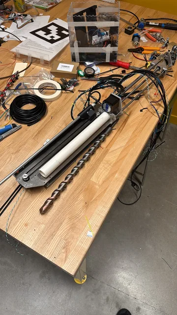
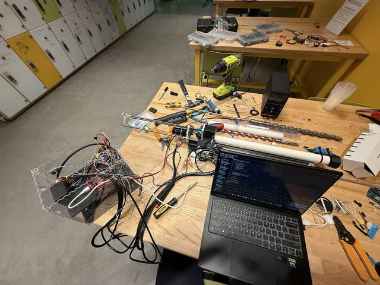
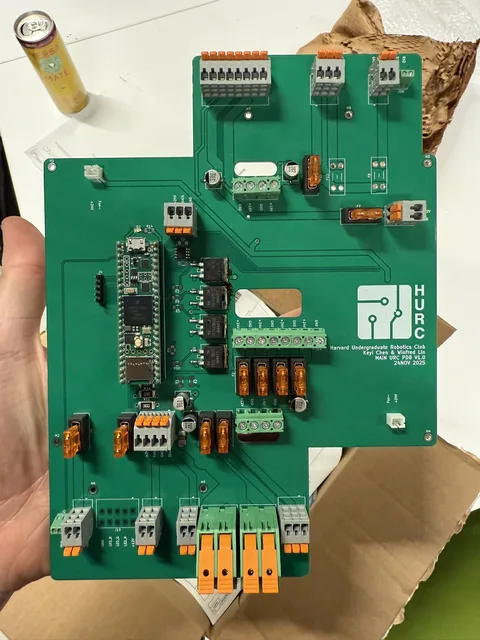

Joining a new team
I joined the Harvard Undergraduate Robotics Club in the spring of my freshman year, when the team was only a few months old and had roughly half a dozen active members. It needed practical help with electronics as much as it needed a finished rover.
My early work included laying out the main electronics assembly and helping integrate components while the arm and chassis were still being developed. I became Vice President that summer and began spending more time on recruiting, training, and coordinating the teams as well as building hardware.
Developing the onboard science module
Over winter break, I supervised the science team and worked heavily on the module's mechanical design. The intended sequence was to drill below the surface, collect a soil sample from roughly 10 cm down, transfer it to the testing area, and perform measurements onboard.
The module combined drilling and sample handling with chemical and optical testing, plus subsurface humidity and temperature measurements. My contribution was to the mechanical design and integration of that hardware as part of the team effort. The bench photographs show the drilling carriage, wiring, and electronics before complete rover integration.


Teaching the team that designed the power board
I coached two electrical-team members from relatively little circuit experience through designing the rover's main power-distribution board. They designed the board; my role was teaching, design guidance, and helping them turn that work into a subsystem the rest of the rover could use.
The board brings together fused power distribution and control connections for the rover's motors and science hardware. The assembled photograph shows the connectors, protective fuses, and controller. This is one of the parts of the project I am proudest of, because the outcome was both a piece of hardware and two students who could take ownership of it.

Growing the club without centralizing every decision
As the rover grew from separate mechanisms into a vehicle, we also had to grow the team. Recruiting, fundraising, and onboarding became substantial parts of my role. I taught CAD and practical circuit-board design and helped organize the work so it did not all depend on a few experienced members.
Lessons from NROTC about clear responsibility and distributed leadership were useful here. The next challenge is continuing to integrate the subsystems while bringing new students into the work. The rover remains an ongoing team project, with science and autonomous-navigation capabilities still being developed and tested.

{kind=link}
{kind=link}
{kind=link}
{kind=link}
{kind=link}
{kind=link}
{kind=link}
{kind=link}
{kind=link}